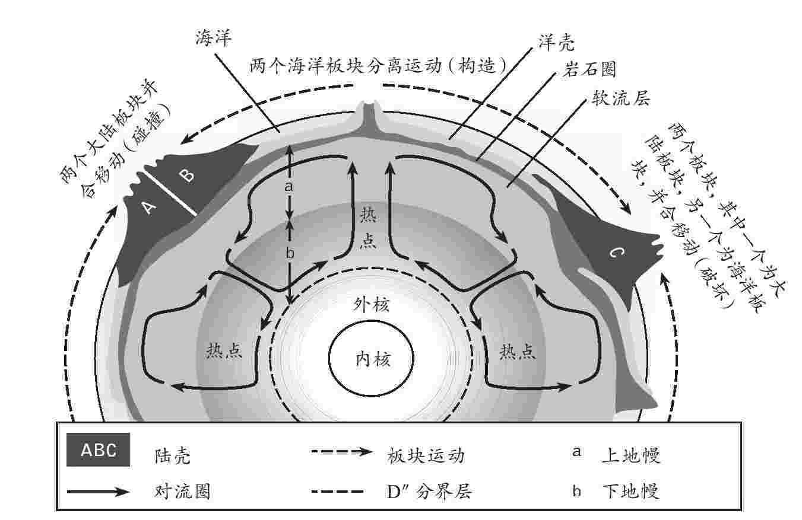
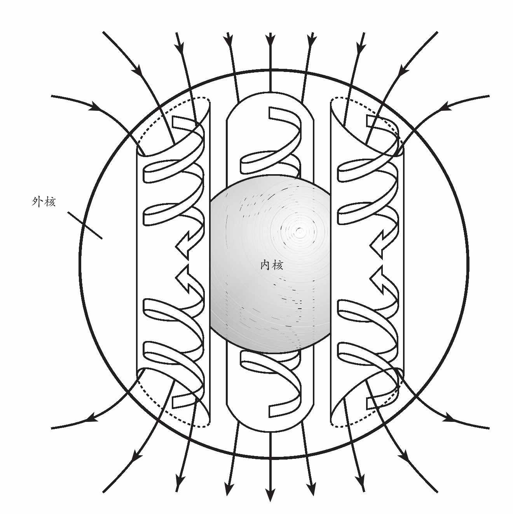

地球的表面覆盖着一层相对较薄的冷硬外壳。在海洋下面，这层外壳大约有七八公里厚，而就大陆而言，其厚度则是30-60公里。其基部是莫氏不连续面 [24] ，又称“莫霍面”，它可以反射地震波，这大概是由于它的组成发生了变化，变成了其下地幔的致密岩石。岩石圈是地球表面上一层冰冷坚硬的物质所组成的完整板块，不但包括地壳，还包括地幔的顶部。大陆岩石圈总共有大约250公里乃至300公里厚。海洋下的岩石圈较薄，越接近洋中脊越薄，最薄处仅比7公里洋壳略厚。然而岩石圈并不是一个单一的坚硬地层，它可以分成一系列所谓的构造板块。这些板块是我们了解地球深处如何运作的主要线索。为了解那里发生的事，我们必须深入地壳之下一探究竟。
在距离我们只有30公里的地方，有一个我们永远不能探访的所在。30公里的横向距离不过是一次轻松的公交之旅，但在我们脚下，这一距离几乎就是一个难以想象的高温高压之处了。任何矿井都不可能开采到如此之深。1960年代，有人提议利用石油开采业的海洋钻探技术，直接钻通洋壳进入地幔，这就是所谓的“莫霍计划”，后来由于成本之巨和任务之艰而未能实施。在俄罗斯的科拉半岛和德国境内进行的深层钻探尝试在达到大约11000米深度后就放弃了。这不仅是因为岩石难以钻孔，而且热量和压力会软化钻机的部件，还会把刚刚钻开的孔洞立即重新压合。
我们可以通过一种方法直接从地幔中取样：利用深源火山的喷发物。火山喷发出来的岩浆大多只是来自源地物质的部分熔融物，因此，举例来说，玄武岩并非表层岩的完备样本。然而，它却能够提供关于其下物质的同位素线索。例如，某些来自夏威夷等地的深源火山的玄武岩中含有氦3及氦4比率较高的氦气，据信早期太阳系的情况也是如此。因此人们认为，这种玄武岩来自地球内部的某个至今仍然保持着本来面貌的部分。火山喷发时氦逸失了，被放射性衰变所产生的氦4缓慢地取代。洋脊火山玄武岩中的氦3耗尽了。这意味着这种玄武岩是再生物质，其氦气在早期的喷发中逸失，而且这种玄武岩并非来自地幔深处。
剧烈的火山喷发有时的确会在其岩浆中携带着更直接的表层岩样本。这些所谓的“捕虏岩”是熔岩流携带而出的尚未熔融的表层岩样本。它们通常是诸如橄榄岩等暗绿色的致密岩石，富含橄榄石矿，后者是一种镁铁硅酸盐。山脉深处有时也会找到类似的岩石，是从地球极深处强推出地面的。
坎特伯雷座堂 [25] 那富丽堂皇的中世纪彩色玻璃窗可以透露一些有关地球地幔性质的信息。窗子由很多小块的彩色玻璃组成，嵌在跨距很大的窗框里。如果观察透过窗格玻璃的阳光，就会注意到底部的光线比顶部的要暗一些。这是由于玻璃的流动。用专业术语来说，玻璃是一种过冷的流体。历经若干世纪，重力令窗格缓慢下垂，底部的玻璃因而会较厚一些。然而，如果用手摸或者锤击（求主饶恕！），玻璃仍然呈现出固体样态。了解地球地幔的关键在于认识到，那里的硅酸盐岩石能够以同样的方式流动，尽管它们并未熔融。实际上，这些个体矿物颗粒一直在重新形成，从而引起了被称作“蠕动”的运动。结果是地幔极具黏性，就像非常黏厚的糖蜜。
关于地球的内部结构，最明确的线索来自地震学。地震通过星体发出地震冲击波。就像光线被透镜折射或被镜子反射那样，地震波穿行于地球，并在其不同的地层中反射。随着岩石的温度或软度不同，地震波的行进速度也有差异。岩石温度越高就越软，冲击波行进的速度也就越慢。地震波主要有两种，初至波（P波）速度更快，因而会率先抵达测震仪；另一种是续至波（S波）。P波是进行推拉运动的压力波；S波是剪切波，无法在液体中行进。正是通过对S波的研究，人类首次揭示了地球的熔融外核。在单一的仪器上探测这些地震波并不会显示多少信息，但如今全球各地散布着由数以千计灵敏的测震仪组成的网络。每天都有很多小型地震发出信号。结果有点像医院里的全身扫描仪，患者被X射线源和传感器环绕，计算机利用结果来构建患者内部器官的三维影像。医院的探测装置被称作计算机辅助断层扫描，而地球的相应版本则被称作地震层析成像。
测震仪的全球网络最适于在全球范围内观测事物。它会揭示地幔的整体分层，以及每隔数百公里，地震波速因温度高低而发生的变化。世界上还部署着间隔更小的矩阵，起初设置它们的目的是探测地下核子试爆，它们连同地球物理学家部署在感兴趣的地质区域的新型矩阵一起，有望观测到数公里之深的地幔结构。并且，似乎每一个尺度上都有自己的构造。在这些地球全身扫描中，最清楚的莫过于地层了。在2890公里——我们这个星球液态外核的厚度——之下S波无法通过。但是地幔有几个显著的特征。比如前文中提到的，地壳基部有莫氏不连续面，另一个则位于坚硬的岩石层的基部。岩石层下的软流层比较软，因而地震波速较慢。410公里以下和660公里以下分别是界限清晰的地层，而520公里深处左右则是一个不甚清晰的地层。在地幔基部还有另一个被称作核幔边界（D″分界层）的地层，它很可能是不连续的，厚度范围从0公里到大约250公里不等。
地震层析成像同样揭示了一些更加微妙的特征。本质上，较为冰冷的岩石也会更硬，因而相对于较热较软的岩石，地震波在其间行进的速度也更快。在古老而冰冷的洋壳插到大陆之下或者插进海沟的位置，下沉板块的反射显示出其通向下方地幔的通道。在那里，地球炙热的核心烘烤着地幔的底面，将其软化并抬升成一个巨大的地柱。
地幔充满了未解之谜，它们乍看上去像是彼此矛盾的。它是固态的，却可以流动。它由硅酸盐岩石组成，硅酸盐岩石本是一种优良的隔热体，但不知为何，却有大约44太瓦特 [26] 的热量穿过地幔涌向地表。很难弄清热流是如何仅靠传导完成的，然而如果确实存在对流，地幔就应该是混合物，那么它又如何能显示出分层构造？此外，除非地幔中存在未混合的区域或地层，海洋火山喷发出的岩浆中所含的示踪同位素混合物，为何全然不同于据信存在于地幔主体内的混合物？这些谜题是近年来地球物理学的主要研究领域之一。
某些最有用的线索来自对地下那些岩石性质的了解。为了查明地球深处那些岩石的状况，就必须复制那里令人难以置信的巨大压力。令人惊异的是，这种情形动动手指就能模拟：握住两颗优质的宝石级金刚石，用珠宝商的术语来说，其切工为“明亮型”，即每颗金刚石的顶部均有一个完全平坦的小切面。将一个微小的岩石样本置于两个小切面中间，然后用指旋小螺钉将两个小切面拧得更紧一些。两个金刚石砧之间的力非常集中，以至于仅仅拧动螺钉，产生的压力就会超过300万个大气压（300吉帕斯卡 [27] ）。金刚石是透明的，通过激光照射就可以对样本加热，也方便使用显微镜和其他设备来观测。这实际上可以作为一个窗口，让我们观察地幔深处的岩石的状况。
一天，比尔·巴西特教授在康奈尔大学的实验室里研究金刚石砧上的一个微小晶体。当他提高压力时，没有发生什么变化，于是他决定先去吃午餐。正要离开，忽听到砧上传出突如其来的爆裂声。显然，他的宝贝金刚石碎了一颗，他冲回去在显微镜下仔细观察。钻石安然无恙，但样本突然变成了一种全新的高压晶体形式。这就是所谓的相变：组分依然，但结构发生了变化——在该例中，变成了更加致密的晶格。
从捕虏岩的组分我们知道，至少上地幔是由橄榄岩等岩石组成的，其中富含镁铁硅酸盐矿物橄榄石。把这种岩石的微小样本放在金刚石砧中间加压，它就会经历完整的一系列相变。在相当于410公里地幔深处所受的大约14吉帕斯卡的压力之下，橄榄石变形成一种名为瓦兹利石的新结构。在相当于地下520公里、18吉帕斯卡的压力下，它又发生了形变，变成了林伍德石，一种尖晶矿石的形式。然后，在23吉帕斯卡，相当于地下660公里所受的压力之下，会变成两种矿物：一种是钙钛矿，另一种是名为镁方铁矿的镁铁氧化物矿物。我们会注意到，相变发生的深度恰恰是可以反射地震波的地方。因此，这些地层或许可以表示晶体结构的变化，而非组分的变化。
地下660公里的地层是上地幔和下地幔的分界线，这是一个特别强烈的特征，也是学界激烈辩论的焦点：有人认为整个地幔都是在一个巨大的对流系统中循环，而另一些人认为地幔更像是一口双层蒸锅，上、下地幔各有其独立的循环腔，两个腔体之间几乎没有物质交换。历史上，地球化学家更偏爱双层结构，因为这种结构考虑到了不同地层之间的化学差异，而地球物理学家则偏爱全地幔对流。当前的迹象表明，两者可能都是正确的，在这一折中方案中，全地幔循环是可能的，但绝非易事。地震层析成像的数据初看之下或许偏向双层蒸锅的观点。地震扫描揭示了下压的洋壳板块沉向660公里处异常地层的位置，但它们似乎并未通过该地层。相反，物质散布开去，似乎又在数亿年间在该深度聚集起来。但进一步扫描显示，在某一位点，下压的洋壳板块可以像雪崩一样突破并继续沉到下地幔，直至地核的顶部。
1994年6月，玻利维亚遭遇了一场剧烈的地震。地震几乎没有造成破坏，因为震源很深——大约有640公里。但在那样的深度，岩石应该是太软了，以至于无法断裂。正是在地震发生的区域，来自太平洋古老洋壳的一个板块下沉到安第斯山脉以下。当时，想必是一整层的岩石经历了一场灾难性相变，变成了更加致密的钙钛矿结构，它似乎必须经历这样的变化，才能够沉入下地幔。这个解释一举解开了地幔分层和深层地震的秘密。
但仍有很多问题有待解释。例如，潜入太平洋汤加海沟之下的洋壳板块以每年250毫米的速度穿过地幔，对于其温度而言，这一速度过快，无法稳定下来。洋壳物质会在区区300万年内抵达上地幔的基部，如果淤积在那里或者延展至下地幔，其低温问题理应十分突出。但没有证据表明存在着这样的板块。某个理论声称，不是所有的橄榄石都转变成了密度更高的矿物，因而原本的板块会中立地漂浮在上地幔中。低温加上矿物成分使得其地震波速与其他地幔物质非常相近，因此，它不会轻易显现出来，就像一层甘油不会在水中突出显露一样。事实上的确存在着诱人但微弱的地震学证据，证明在斐济的下面存在着这样的板块。

图6 地球地幔内的基本循环，及其如何反映在岩石圈板块运动和各个板块边界上。为清楚起见，运动均已简化，岩石圈的纵向比例尺也放大了不少
钻石是高压形式的碳，只会形成于地球100多公里深度之下，有时还要比这深得多。钻石中的同位素比率表明，下潜的洋壳中经常会有碳形成的钻石，或许是来自海洋沉积物中的碳酸盐。钻石中有时会含有其他矿物的微小内含物。宝石商人多半不怎么欢迎这个特征，但地球化学家对此求之不得。对那些内含物的精密分析，可以揭示有关钻石形成和穿过地幔的漫长的、有时颇迂回曲折的历史。
有些钻石内含一种名为顽火辉石的矿物，这是硅酸镁的一种形式。一些研究人员认为，它原本是来自下地幔的硅酸镁高温钙钛矿。证据是，根据他们的观察，这种矿物中所含的镍只有上地幔应有含量的十分之一。在下地幔的温度和压力下，镍被一种名叫铁方镁石的矿物所吸收，从而使得硅酸镁高温钙钛矿几乎不含镍——铁方镁石也是一种常见的钻石内含物。在少数情况下，内含物富含铝，在上地幔的环境里，铝被锁在石榴石之中。还有些内含物是富铁的，由此可知它们可能产生于地幔中靠近地核分界线的极深处。这些深处的钻石同样拥有一个与众不同的碳同位素特征，据信这是深层地幔岩而非潜没海洋岩石圈的特点。对钻石及其周围岩石的地质年龄的估计表明，其中的一些穿过地幔的道路漫长而迂回，或许用了逾十亿年时间。但这是个颇有说服力的证据，说明在上、下地幔之间至少存在着一些物质传递。
钻石被发现时所依附的岩石可不比钻石本身逊色多少。这种岩石名为金伯利岩，是以南非的钻石矿金伯利镇命名的。岩石本身简直是一团糟！除了钻石之外，它还含有各种各样不同岩石的多角团块和粉碎片段；这所谓的角砾岩是一种火山岩，往往会在远古的火山口形成胡萝卜形的岩颈。其确切组成很难判断，因为它在穿过岩石圈时吸收了太多的粉碎岩屑，但其原始岩浆一定主要由来自地幔的橄榄石和现在以云母形式存在的大量挥发性物质共同组成，其中橄榄石占大部分。如果它从地幔缓缓上升，如今我们就没有钻石了。钻石在地下不到100公里处的压力之下并不稳定，假以时日，它会在岩浆中熔解。但金伯利岩火山无暇等待。人们估计，物质穿过岩石圈的平均速度大约为70公里每小时。火山口在靠近表面的位置岩颈加宽，这表明挥发性物质正在剧烈扩张，表面的喷发速度可能是超音速的。因此，一路向上所采集的所有岩石碎片都猝熄了，它们凝固在时间中，因而成为来自岩石圈乃至地幔深处的各种岩石的样本。
近期对全球地震数据的分析显示，地幔基部有一个厚度最多200公里的薄层，即D″分界层。它不是一个连续的地层，而更像是一系列板块，也有点像地幔底面的一块块大陆。这里可能是地幔中的硅酸盐岩石与来自地核的富铁物质部分混合的区域。但另一种解释认为，这里是远古海洋岩石圈的长眠之所。在其沉降穿过地幔以后，板块依然冰冷致密，因而散布在地幔的基底，被地核缓慢加热，直到或许十亿年后，它以地幔柱的形式再次上升，形成新的洋壳。
根据测量，昼长存在微小差异，这同样提供了关于地球腹地的线索。因为月球对潮汐的牵引，以及最后一次冰河期的冰体压迫导致陆地上升，我们这个旋转的星球正在逐渐减慢转速。但仍有十亿分之一秒量级的微小差异。其中的一些或许应归因于大气循环吹到山脉上，就像海风吹鼓船帆。但另一部分看来像洋流推动船只的龙骨那样，是在外核中推动地幔基部脊线的循环引起的。因此，地幔的基部可能存在着像倒置的山脉那样的山脊与河谷。菲律宾地下十公里的地核中似乎有一个大洼地，其深度是美国大峡谷的两倍。阿拉斯加湾地下的鼓起是地核上的高点，那是个比珠穆朗玛峰还高的液态山峰。下沉的冰冷物质或许会在地核上压出凹痕，而热点则会向上鼓起。
下地幔的钙钛矿岩石尽管要炙热得多，却远比上地幔风化岩更有黏性。据估计，它的抗流动性要高出30倍。因此，地幔基部的物质以缓慢得多的速度上升，上升形成的柱体也要比上地幔的典型地柱粗大得多。它的表现很像熔岩灯里的黏性浆团，流动得极为缓慢。尽管某些物质在整个地幔中循环，但很可能真的存在一些只有上地幔才有的小对流圈。实验系统中对流圈的宽度趋向于与其深度一致，而至少在世界上的某些地区，地幔物质所组成的柱体，其间隔似乎与上地幔660公里的深度一致。地球如何熔融物质升降起落，生生不息。炙热的地幔岩地柱缓慢升向地壳，所受的压力也随之减轻，它们开始熔融。科学家们可以利用巨大的水压来挤压在熔炉内加热的人造石，再现当时的场景。岩石并非整体熔融，而只有一小部分如此；所产生的岩浆不像地幔其他部分那样稠密，因而得以快速上升到表面，作为玄武岩熔岩而被喷发出来。至于它是如何流经其他岩石的，曾经是另一个大谜团，最终的答案与岩石的精微结构有关。如果在岩石颗粒间形成的小熔融袋顶角很大，岩石就会像一块瑞士干酪；熔融袋不会相互连通，熔融物也不会流出来。但那些顶角很小，这样岩石就像一块海绵，所有的熔融袋也是相互连通的。挤压海绵，液体就会流出来。挤压地幔，岩浆就会喷发。
艾萨克·牛顿看见苹果落下来，意识到重力会把物体拉向地心。但他不知道，在世界的某些地方，苹果下落的速度会比其他地方略快一些——人们通常不会注意到这一差异，也无法用苹果轻易测量出来。但宇宙飞船可以做到这个。根据道格拉斯·亚当斯在《银河系搭车客指南》中的说法，飞行的秘密，就在于一直在下落，却忘记了着陆。卫星差不多就是这样。卫星自由落下，但它的速度将其保持在轨道中。致密岩石区域更加强劲的万有引力会使卫星加速。在通过重力较小的区域时，卫星则会降速。通过跟踪低空卫星的轨道，地质学家可以绘制出位于轨道下方的地球的重力图。
在比较地球表面的重力图与地球内部的地震层析成像扫描图之后，结果大大出乎地球物理学家的意料。人们本来期待看到，冰冷致密的洋壳板块或因其密度更大而导致过大的地球引力，而由炙热地幔岩所组成的向上升起的地柱密度较小，因而其重力也较小。现实与此相反。情况在南部非洲尤为显著，那里似乎有个巨大的炙热地幔柱在上升，而在印度尼西亚附近，冰冷的板块正在下沉。麻省理工学院的布拉德·黑格对此做出了自己的解释。南部非洲地下的超级地幔柱正在导致相当一大块陆地上升，其上升的高度超出了预期——人们原以为大陆只是在静态的地幔上漂浮。他估计，跟自然漂浮在地幔上的位置相比，南部非洲被抬升了大约1000米，岩石的这种过度抬升导致重力增大。与此相似，印度尼西亚地下潜没的海洋岩石圈把周围的地表均拽在身后，造成重力较小，并导致海平面整个比陆地高出一块。如今就职于亚利桑那大学的克莱门特·蔡斯发现还有各种其他重力异常现象对应了曾经发生过的潜没事件。从加拿大的哈德孙湾，经由北极，穿过西伯利亚和印度，直到南极圈有一个很长的低重力带，似乎可以标记一系列潜没带，在过去的1.25亿年，那里的远古海床插入地幔。人们曾经认为是海平面上升导致了澳大利亚东半部的大部分大陆在大约9000万年前被淹，事实上或许是因为该大陆漂浮在一个远古潜没带上，在其经过时被潜没带拖曳，从而把陆地降低了600多米。
我们不可能对地球的核心有直接体验，也不可能获得地核的样本。但我们的确从地震波中获悉，地核的外部是液态的，只有内核才是固态的。我们还知道，地核的密度远高于地幔。太阳系里唯一既有足够的密度，又储量丰富，足以组成地核那么大体积的物质就是铁。虽然没有地球核心的样本，我们却能在铁陨石中找到可能与之相似的东西。铁陨石不像石质陨石那样常见，但它更易于辨认。它们据信源自体积较大的小行星，早在这些小行星被发生在太阳系早期的轰炸粉碎之前，其铁质核心便分离了出来。它们的成分大部分是金属铁，但也含有7%至15%的镍。它们往往具有两种合金的共生晶体结构，一种含有5%的镍，另一种含有40%的镍，按比例组成了星球核心的总成分。
在新生的地球至少还是半熔融体时，铁质的地核必定已经通过重力从硅酸盐地幔中分离出来而形成了。随着地层的分离，诸如镍、硫、钨、铂和金等能够在铁水中熔融的所谓亲铁元素会与地层分离。亲岩元素则与硅酸盐地幔一起保留下来。铀和铪等放射性元素是亲岩的，而它们的衰变产物，或称子体，是铅和钨的同位素，因而会在地核形成之时被分离出来，进入地核。这必然会在地核形成时重置地幔中的放射性时钟。对于地幔岩地质年代的估计把这一分离的时间确定在45亿年前，大约比最古老陨石的地质年代晚5000万至1亿年，而最古老的陨石似乎出现在太阳系整体形成之时。
地球的中心是冰冻状态，至少从铁水的角度来看，在地下难以置信的压力下，它是冰冻状态。随着地球的冷却，固态铁从熔融态地核中结晶出来。当前学界的理解是，产生地球磁场的发电机需要一个固态铁核，但纵观地球历史，它未必自始至终都有一个铁核。至于地球过去的磁场，其证据深锁于显生宙各个时期的岩石中。但大多数前寒武纪的岩石已经大变样了，因而很难测出其原本的磁性。这样一来，估计内核地质年龄的唯一方法，就只能来自地球缓慢冷却过程中地核热演化的模型。其计算方法与开尔文勋爵在19世纪末以地球冷却的速率来估算其年龄的方法相同。但现在我们知道，放射性衰变还会产生额外的热量。最新的分析表明，内核大概是在25亿至10亿年前这段时间开始固化的，取决于其放射性物质的含量。听上去或许是一段漫长的时间，但这意味着地球在其早期的数十亿年里是没有内核的，或许也没有磁场。
如今，内核的直径大约是2440公里，比月球的直径小1000公里。但它仍在持续增大。铁元素以大约800吨每秒的速率结晶，会释放相当数量的潜热，这部分热量穿过液态的外核，造成其内流体的翻腾。随着铁元素或铁—镍合金的结晶析出，熔融物中的杂质（大部分是熔解的硅酸盐类）也被分离出来。这部分物质的密度低于熔融态的外核，因而以连绵的颗粒雨的形式穿过外核而上升，那些颗粒或许也就如沙子般大小。杂质可能像上下颠倒的沉淀物一样集聚在地幔的基部，堆积在上下颠倒的山谷和洼地里。地震波显示，地幔基部有一层速度非常缓慢的地层，这种向上的沉淀物即可解释这种现象。这些沙样沉淀物可以圈闭熔融态的铁，就像海洋沉积物圈闭水一样。通过将铁保持在其内，这一地层所提供的物质可以在磁性上将地核内所产生的磁场与固态地幔所产生的磁场予以匹配。如果部分这种物质以超级地柱的形式上升，促成了地表的溢流玄武岩，就可以解释为什么这类岩石中含有高浓度的金和铂等贵金属了。
从地表上看，地球的磁场似乎可以由地核的一个大型永久性磁棒产生。但事实并非如此。那一定是一台发电机，而磁场是由外核里循环的熔融态铁的电流产生的。法拉第曾证明，如果手头有电导体，那么电流、磁场和运动三者中的任意两个均可产生第三个。这是电动机和发电机的工作原理。但地球没有外部的电气连接。电流和磁场在某种程度上都是由地核内的对流产生和维持的，这就是所谓的自维持发电机。但它必须以某种形式启动。在地球拥有自身的启动装置之前，启动或许要依靠来自太阳的磁场。
地表的磁场相对简单，但产生地表磁场的地核内电流则必然要复杂得多。人们提出了很多模型，其中一些诸如旋转导电圆盘等构想只具有纯粹的理论意义。就我们看到的磁场而言，最有说服力的模型用到了一系列柱形胞腔，其中每一个都包含螺旋式的循环，这种循环是由热对流和地球自转所产生的科氏力共同作用所生成的。地球磁场最奇怪的特征之一，是它会在不规则的时间间隔内（通常是数十万年）反转极性，我们将会在下一章对此进行更详细的讨论。除此之外，有时会在长达5000万年的时期没有一次反转。单个火山晶体内所圈闭的磁场强度的证据表明，在磁极未反转的时期（即超静磁期），磁场可能比如今更强一些。磁场并非与地球的自转轴精确对准。当前，磁场与地球自转轴的倾斜角度大约是11°，但它不会永久停留在那个角度。1665年，磁场几乎指向正北，然后又偏移开去，1823年的倾角为向西24°。计算机模型无法准确解释这种情况，但提出了发电机本身无序变动的可能。在大部分时间，地球的磁场与地幔相配合，效力下降，但有时会产生很强的效力，以至磁场翻转。至于这种翻转能在一夜间完成，还是要持续数千年时间，其间磁场或者胡乱移动或者彻底消失，现在都还不清楚。如果是后一种情况，则不管是对罗盘导航还是对整个地球上的生命都是个坏消息，因为如此一来，我们都会暴露在来自太空的更危险的辐射和粒子之下。
还有人试图通过实验，为地核内发生的一切建模。这并非易事，因为需要大量的导电流体以足够的速度循环来激发磁场。德国和拉脱维亚的科学家们在里加实现了这一目标，他们使用装在同心圆筒中的2立方米熔融钠。通过将钠以15米每秒的速度推入中柱，他们最终创造了一个自激式磁场。

图7 地球磁场产生的一个可能的模型。外核中的对流因科氏力而呈螺旋状（带状箭头）。这与电流（未显示）一起产生了磁力线（黑色箭头）
地球越深处温度越高，但地球的中心究竟有多热？答案是，在地球的熔融态外核与固态内核的分界线上，温度必然恰好就是铁的熔点。但是，在那样的惊人压力下，铁的熔点会与其在地表上的数值大不相同。为了查明这个温度到底是多少，科学家们必须在实验室里重现那些条件，或是依据理论进行计算。他们尝试了两种不同的实用方法：一种是使用在金刚石砧间挤压的微小样本，另一种则是使用一台多级压缩气炮，瞬间压缩样本。因为很难达到如此巨大的压力——内核分界线处的330吉帕斯卡——并且很难校准压力以便知道是否到达目标，目前两种方法均未能直接测量出温度。它们能做的只是测量在压力略低的条件下铁的熔点，并以此为出发点向下推断。但还存在其他的难点，很大原因是由于地核并非纯铁质的，杂质会影响熔点。在纯铁状态下，理论计算得出的内核分界线温度是6500°C，而就地核可能掺杂的杂质多少而言，铁的熔点可能是5100-5500°C。这些数字都在通过金刚石砧和气炮这两种实验估算结果的范围之内。
对穿过内核的地震波进行的研究制造了另一个惊喜。这些地震波从北向南的行进速率似乎要比从东向西快3%-4%；内核表现出各向异性，一种在所有方向上各不相同的结构或晶粒。对此的可能解释是，内核是由很多对齐的铁晶体组成的——甚或是直径逾2000公里的一整块铁晶体！另一种可能是，内核内部的对流与地幔中的完全一样。或许有少量液体被晶粥所捕获。经过计算，与赤道对齐的3%-10%容量的液体平盘即可使内核呈现出科学家们观察到的各向异性现象。
像整个地球一样，内核也在自转，但自转的方式与地球其他部分并不完全相同。它实际上转得比这个星球的其他部分稍微快一些，在过去30年里，走快了将近十分之一圈。在阿拉斯加探测到了来自南美洲最南端以外南桑威奇群岛的地震，对其地震波的仔细研究显示了上述结果。这是由上文刚刚讨论的内核的南北向各向异性所揭示的。因为内核超前于地球其他部分，该各向异性的结果发生了变化。1995年，堪堪掠过内核外界的地震波抵达阿拉斯加的速度与1967年的速度一样。但1995年地震波穿过内核的速度比1967年快了0.3秒，这表明内核的快速通道轴线每年向定线方向移动大约1.1°。理解了内核为何转得如此之快，我们便可以深入了解在那个强磁场环境里究竟发生了什么。可能的情况是外核中的电流对内核起到了一种磁性拖曳的作用，这与大气层中的射流相似。
到目前为止，整个地核中只有大约4%是冰冻的。但在30亿-40亿年后，整个地核都将凝固，届时，我们也许就会失去磁防护了。